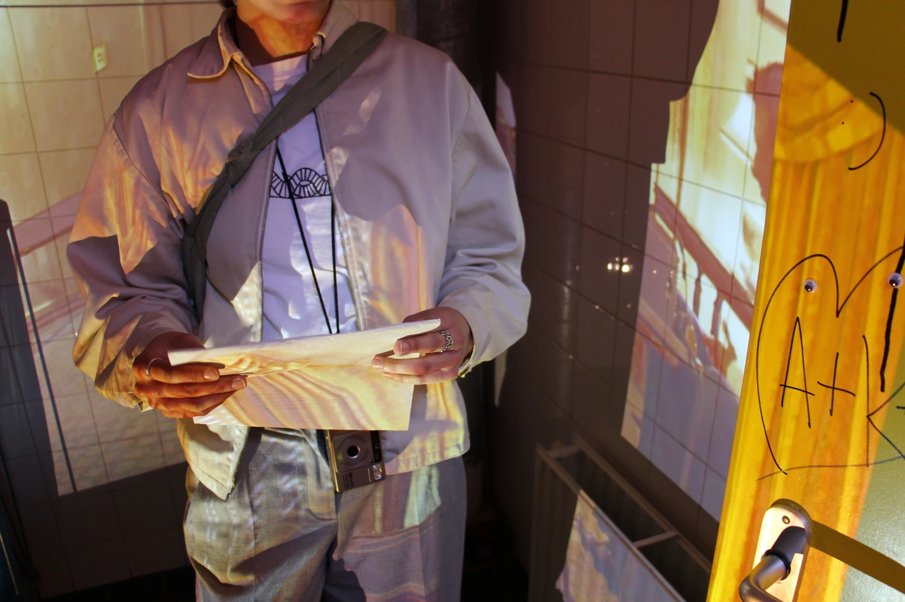
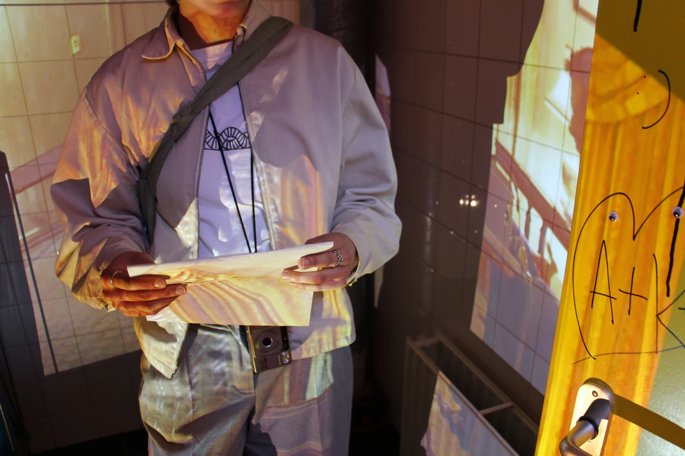

In The Event Of Pain, Try Not To Think About It is a series of three installations about the quality of human pain and suffering, inspired by the 2020 television series Ratched.
Materials — projectors, LED lights, PVC strip curtain, custom silkscreen printed paper towels
Location — KABK bathroom
Installation
The Hague, March 2023
Location — KABK bathroom
Installation
The Hague, March 2023


 
